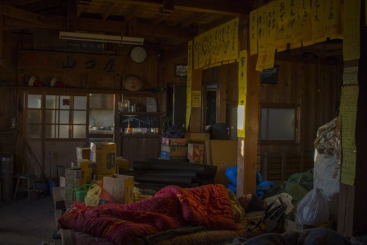

"Don't just capture the moment; Tell me a story"
There was an undeniable sense of panic and awe as this cumulonimbus cloud erupted over Western Tokyo before sunset. The handful of people left on the summit quickly ran to grab their cameras and sketchpads, eager to capture the rare spectacle.
Jin emerged silently out of the kitchen, wandering over to the observation deck while pulling out a cigarette and lighter. She sat, almost perfectly still, staring into the cloud, as she gently blew her smoke into its morphing crown, grateful for the escape from the world beneath these next two months would be.

Within minutes of recieving a typhoon warning, our windows and walls were boarded up. We tied down the water tanks, and switched our generators to run on their lowest output mode. This typhoon wasn't forecasted to pass directly over us, but better be safe than sorry.
Huddled around the one remaining bucket of burning coal, Shizu-san slowly raised his head, cracked his back, and said "Saa, shall we?", signalling the start of a decades long tradition of playing Mahjong to pass time during typhoons, as the wind rattled the corrugated steel roof panels above our heads.

As the climbers outside celebrated reaching the summit in time for sunrise, Shin-sensei let out another deep breath. After a grueling 16-hour workday, he managed to pushed aside the cardboard boxes and plastic bags scattered across the bench, giving himself just enough space to unfold his futon before passing out.
We were two days away from closing up the hut for the season. There was still a mountain of work to be done before we could bolt up our doors and head down, but for now, we could rest. The climbers outside would have to get their bowl of steaming ramen somewhere else. Shin-sensei wasn't getting up any time soon.

The summit, buzzing with nervous energy a mere minute ago, had gone silent. Waves of neon windbreakers turned east, as the fog cleared, revealing the first rays of light that had cracked above the horizon.
An older man lowered his camera, and looked around at the hundreds of people from around the world that had come to share this moment with him. He raised his hands in the air, and yelled
"Banzai!"
"Banzai!"
"Banzai~!"
and the crowd erupted into celebration.
The phone rang at 3:13am, informing us that a 28-person tour from Taishikan would be arriving at the summit within the hour. Shachō rolled out of his futon, and yelled through his window that we had 20 minutes to get the hut up and running for the day. Sundays were always busy, but I could sense this morning would be something esle.
I threw on my sweatpants and grabbed my camera as I hastily stumbled out of the hut to see what we were up against for the day. Thousands of headlamps silently slithered their way up an invisible mountain, as the yellow hue of Tokyo gently lit the sky all the way into the horizon.
"A wise man climbs Fuji once, only a fool twice"
The cultural pilgrimage up the sandy slopes of this iconic peak brings with it high expectations; Expectations of a summit sunrise so perfect you truly believe this is the land of the rising sun.
Unpredictable weather makes many of these journeys end in disappointment. Climbers descend, heavyhearted, ignorant of the mystical charm a gloomy sunrise still holds. Those who choose to look up are greeted with an almost eerie view, one that makes you long for the sun you didn't see, as you slip back beneath the clouds.
Pls write something :(
She never onced raised her head, or drew her attention away from the work at hand. Passersby ice cream, sun umbrellas, and mist-sprayers did not tempt her, or the dozen other garden workers tasked with maintaining the impecable standards of the gardens surrounding Kōdaiji-dera.
Kyoto's beauty is intentional, requiring the efforts of hundreds of silent workers, often hidden in plain sight, to uphold. They ask for no praise, no applause, only that you treat the gardens with the respect that they deserve. Thousands have passed through these gardens before you, and thousands will pass after. It's only right that we leave these wonders in a state for others to enjoy.

Right then, the countdown had begun. The next 10 months would be spent moving from city to city, taking up work wherever it came, until the day he could return back to the small mountain hut that had become his home.
The cigarette crackled quietly as he drew a long, heavy breath. Junior thrives off of people, talking to them, entertaining them, making them laugh till their ribs hurt and they felt light-headed. Staring at the freshly taped sign that read "Sorry, We Are Closed", he exhaled, longing for the day he could welcome guests back into his home.

Shizu-san knelt by the burning bucket of coal, chopsticks in hand, carefully turning the fillets over onto their skin to crisp. Overwhelmed by the aroma of salmon fat dripping on the red hot binchōtan, it took every bit of self-control to resist the temptation to sneak a quick bite.
Yet he waited, for every fillet to finish on the grill. He waited, as he assembled the rest of the meal, and called us into the kitchen to be served. He waited, arms across his chest, as we devoured what was likely the best ochazuke we would eat in our lives. He waited, as we begged for seconds, eagerly serving only the most perfectly crisped and pink flakes of salmon that were left.
Only then did he take his first bite.

Hassy squinted into the binoculars, twisting them into focus as gazed at the neon specs of floats and sun umbrellas scattered across the Chigasaki shoreline. It was the final days of the Obon holidays in late August. Families were flocking to the beaches to get in one last day of sun before returning to school and work.
Lowering the binoculars, he shuffled back into the hut, quickly sliding the door shut behind him. He knelt by the bucket of coal, warming his hands and face as he watched Junior place his breakfast on the grill to toast. Hassy gobbled up his bread and went straight back to work, to finish closing up the hut. He loved the two months he spent on up Fuji, but all he could think about was how ready he was to spend a day in the ocean, soaking up the last rays of the summer sun.

The others had charged ahead, desperate to get back to the car. After almost 60 hours of hiking, snowshoeing, and camping in frozen mountains of the Adirondacks, they were ready to feel their fingers and toes again.
Daniel came to a stop, as the golden glow of the sun seeped its way through the trees, illuminating the clearing. Looking up at the towering white giants above, he stood completely still, smiling with an almost child-like sense of awe and wonder in his eyes, as the pure silence and calm of the forest blanketed him.
For a brief moment, I forgot about the three days of wet winter gear pulling on my shoulders, and about the piercing pain shooting up my suspiciously purple left foot. It all disappeared for a second, as I watched Daniel savor this rare moment of sheer silence.

The three climbers from Shizuoka departed before dawn from the bottom of the Daisekkei, in their second attempt to summit this iconic peak of the Northern Japanese Alps. In the 7 years since their last attempt, the trio had found their stride. They were ready to finally knock Mt. Shirouma off their list.
One steady step at a time, they marched their way up, paving their own path through the perinneal snow valley.
Pls write something :(
Pls write something :(